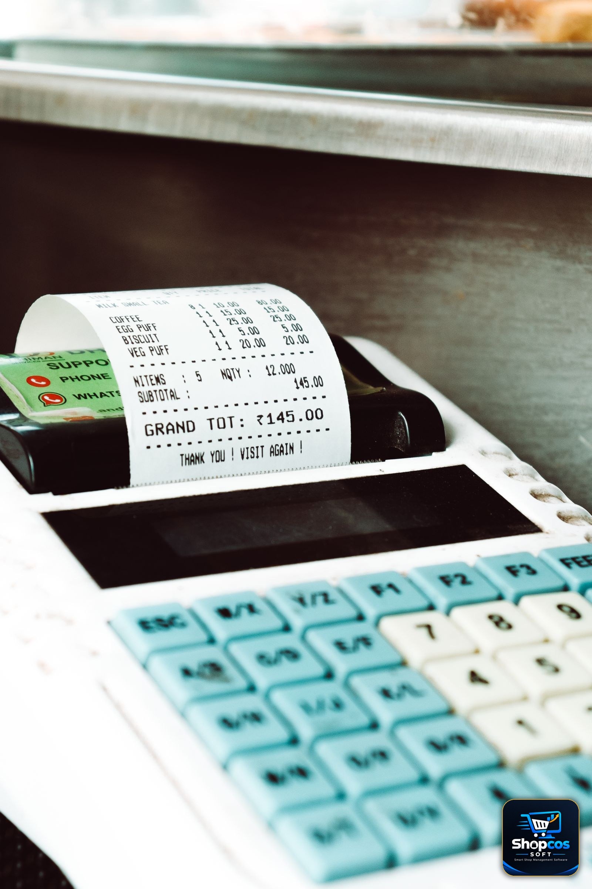

Every Pakistani shopkeeper has seen the ad: "100% FREE billing software — download now, no payment, no card." It is a tempting promise, especially when you are already counting every rupee. But before you install anything on your counter computer, it is worth asking one simple question: if the software is free, how does the company behind it make its money? The answer to that question is the real price of "free" — and it is almost never zero.
This guide is not here to tell you that all free software is a scam. Some of it is genuinely useful, and for some shops it is genuinely enough. What this guide does is lay out, honestly and in rupees, the seven ways free billing software usually charges you — not in cash at download, but in limits, lost time, lost data, and forced upgrades later. By the end, you will know exactly when free is a smart choice for your shop, when it is a trap, and what to check before you trust any free tool with your bills, your stock, and your khata.
Why "Free" Is the Most Searched Billing Term in Pakistan
Search for billing software in Pakistan and the word "free" appears everywhere: free download, free version, free trial, free for small shops. That is no accident. Most Pakistani shops are small, family-run, and price-sensitive. A shopkeeper who has billed on a calculator for twenty years is not going to pay Rs 40,000 for software he has never seen work — he wants to try something first, and "free" is the lowest-risk way in.
Software companies know this. That is why almost every billing product in Pakistan has a free tier, a free trial, or a "free forever" plan. The free version is the shop window: it gets you inside the store. What matters is what happens after you are inside — whether the shop window turns out to be the whole shop, or just a display with the real goods locked behind a paywall. The difference between those two things is the difference between a fair free offer and an expensive one.
The 7 Hidden Costs of Free Billing Software
1. The item, bill, or customer limit
The most common free-plan limit is a cap: 100 items, 50 bills a month, or 30 customers. That sounds generous on day one, when your new software holds twenty items and you are still learning it. It stops being generous around month three, when your real shop has 800 items, 60 daily bills, and 200 udhar customers — and the software suddenly refuses to add item number 101 until you pay.
By then, your data is already inside the free app, your staff has learned it, and switching feels like a chore. That is the point. The limit was never a technical constraint; it was a sales funnel. Before you commit to any free plan, check the exact limits on items, bills, customers, and users — and ask yourself whether your shop will hit them within six months. If the answer is yes, the free plan was never really free for you. It was a delayed payment.
2. Your data lives on their server — and leaves when you do
Most free billing apps are cloud apps: your items, your customers, and your khata balances live on the company's servers, not on your computer. That works fine while you are a paying customer. The risk appears when you stop paying, or when the free plan ends, or when the company changes its terms.
Read the exit terms before you enter anything: can you export your full item list, customer list, and khata balances as a file you own? Or does the export button only appear on the paid plan? A shopkeeper who cannot export his own khata has not saved money — he has handed his shop's memory to a company that can charge rent on it forever. This is the single most important question to ask about any free software, and the one most shopkeepers never ask until it is too late. Our guide to offline vs online billing software explains why data location matters more than most features, especially during load shedding.

3. Ads on your screen — and sometimes on your customer's receipt
Some free billing software is paid for by advertising. That can mean banner ads inside the app, video ads between screens, or — worst of all — a third-party advertisement printed at the bottom of the receipt you hand to your customer. Your customer did not come to your shop to see someone else's ad, and your counter screen is not a billboard.
Ads also slow the counter down. A billing screen that loads an ad before it loads your item list is a queue forming behind your customer. If you are considering an ad-supported free app, run it during a real rush, not during a quiet demo, and watch what happens to billing speed when the internet is slow.
4. The features that matter are always the paid ones
Free plans usually include billing — the basic act of printing a bill. What they usually exclude is everything that makes billing software worth having: barcode scanning, stock that falls automatically when a bill prints, low-stock warnings, expiry alerts, udhar with credit limits, staff logins, and proper reports. In other words, the free version often gives you a digital calculator and charges you for the software.
This is where a fair comparison matters. List the features your shop actually needs — not the ones on the brochure, but the ones your counter uses every day — and check which plan each one sits in. A free app that charges separately for khata, stock, and barcode has not saved you money; it has split the price into pieces so the headline can say zero. Our honest POS software cost guide for Pakistan walks through the full rupee-by-rupee comparison, including the features vendors quietly put behind paywalls.
5. Support that does not exist when you need it
Free users are usually last in the support queue — if there is a queue at all. Many free plans offer only a help page, a chatbot, or a community forum. That is fine when everything works. It is not fine on the evening your printer stops working, your stock numbers look wrong, or your day-closing total does not match your cash drawer and a queue of customers is waiting.
For a Pakistani shop, the support question is specific: is there a human on WhatsApp, in Urdu, during shop hours? If the answer is "email us and we will reply in 48 hours," that is not support — that is a delay. A free plan with no real support can cost you a day's sales the first time something goes wrong, which wipes out months of "savings" in a single evening.
6. Your shop's data as the product
This is the cost nobody puts in a pricing table. Some free software companies make money from aggregated user data — sales trends, pricing patterns, customer behaviour — or from selling you add-on services, loans, or supplier deals based on what your shop sells. Your data may be anonymised, and it may be legal, but it is still your shop's business being monetised by someone else.
You do not need to be paranoid about this. You do need to read the privacy policy — or at least search it for the words "third party" and "aggregate" — and ask one question: does this company make its money from me as a customer, or from my data as a product? A company that sells you a license has one incentive: keep you happy. A company that monetises your data has a different one.
7. The switching cost, paid later with interest
The most expensive hidden cost of free software is the one you pay when you leave it. Months of bills, stock history, and khata balances are inside a system you do not control. Re-entering 800 items and 200 customer balances into a new system takes days, and during those days your counter is running on two systems at once — or on none.
This is why free plans feel painless at the start and painful at the end. The honest way to judge any software, free or paid, is to ask: "If I decide to leave in one year, what exactly do I take with me, and how long will the move take?" If the vendor cannot answer that clearly, the free plan is not free. It is a lease with no exit clause.
The honest maths: a free app that caps you at 100 items, locks your khata behind a paid export, and forces an upgrade at Rs 1,500/month after six months will cost you Rs 27,000 over the next 18 months — and you still do not own your data. A one-time license at Rs 40,000, running on your own PC with your own backups, costs less by year three and never locks you out. Free is only cheaper if you never outgrow it — and growing shops always outgrow it.
Free Trial vs Free Forever: Know Which One You Are Getting
| What to check | Free trial (e.g. 7 days) | Free forever plan |
|---|---|---|
| What you get | Usually the full software, for a limited time | Usually a limited version, forever |
| The catch | It ends — decide before the deadline, or lose access | Limits on items, bills, users, or features |
| Your data after | Ask before the trial ends; some trials delete data | Stays, but export may be a paid feature |
| Best for | Testing real software on your real counter | A tiny shop that will stay tiny |
| Red flag | Card required "for verification" before the trial | No export button anywhere in the free plan |
The distinction matters because the two offers solve different problems. A free trial answers the question "does this software work on my counter?" — and that is a question worth answering properly, with your real items and your real customers, for a full month. A free-forever plan answers the question "can I avoid paying?" — and the honest answer is usually "yes, by accepting limits you will hit, features you will miss, and data you cannot take with you."
One warning about trials: never give a card for a "free" trial. A trial that needs your card is a subscription with a delayed start date, and forgetting to cancel it is the business model. A genuine free trial — like shopcos soft's 7-day trial — asks for nothing but your time, and lets the software prove itself before any money changes hands.
When Free Billing Software Is Genuinely Enough
Free software is not always the wrong choice. It is genuinely enough if your shop matches all four of these:
- You are very small and staying small. A one-person stall with 50 items, no staff, and cash-only sales may never hit a free plan's limits — and if it does, the upgrade is a good problem to have.
- You bill, but you do not manage stock or khata in software. If your register book still holds your udhar and your stock lives in your head, a free billing app is a reasonable first step off the calculator.
- You can export everything, any time. If the free plan lets you download your full data as a file, the lock-in risk disappears and free becomes a fair deal.
- You have a backup plan. You keep your own records — even a notebook — so that no app, free or paid, can hold your shop hostage.
If even one of those is not true, free is not saving you money. It is postponing a bill that arrives with interest, in the form of a forced upgrade, a lost ledger, or a week of re-entry work at the worst possible time.
The 10 Questions to Ask Before You Install Any Free Billing Software
- What is the exact limit on items, bills, customers, and staff users?
- Can I export my full data — items, customers, khata balances — without paying?
- Does it bill fully offline, on my own computer, during load shedding and internet outages?
- Are barcode scanning, automatic stock deduction, and expiry alerts included, or paid extras?
- Does khata work inside the bill, with credit limits that warn at the counter?
- Is there a human on WhatsApp, in Urdu, during shop hours — or only a help page?
- Do ads appear anywhere, including on printed receipts?
- What happens to my data if I stop using it, or if the company closes?
- Does the free trial require a card? (If yes, walk away.)
- What will this cost me in year two and year three — monthly fee × 24 months, plus every paid add-on?
Run those ten questions on any free offer, including ours, and compare the answers side by side. Our comparison of 9 billing options in Pakistan judges every product — including shopcos soft — on the same tests, so you can see where each one actually stands. And if you want to understand the udhar side properly before choosing, our guide to managing udhar khata covers the habits the software must support, whichever product you pick.
The Bottom Line
Free billing software in Pakistan is not a lie — but it is rarely the whole truth either. The headline price is zero; the real price is paid in limits, locked data, missing features, absent support, and a switching cost that arrives exactly when your shop is busy enough to hurt. The shopkeepers who get burned by free software are not careless. They are busy people who trusted a headline and discovered the fine print at the counter, during a rush, with a customer waiting.
So use free software the smart way: use a genuine free trial to test real software on your real counter, with your real items and your real khata, for a full month, without giving a card. Judge it on the ten questions above, not on the word "free." And when the software proves itself — when bills print in rupees, stock falls on its own, khata updates without a notebook, and the counter keeps working through load shedding — pay for the version that lets you own your data outright. That is not an expense. That is the cheapest insurance your shop will ever buy.
Photo credits: A shopkeeper calculating expenses in a small shop photo by Thomas balabaud · A cash register printing a receipt photo by GOWTHAM AGM · Hands holding a calculator over bills photo by Kaboompics — all via Pexels.